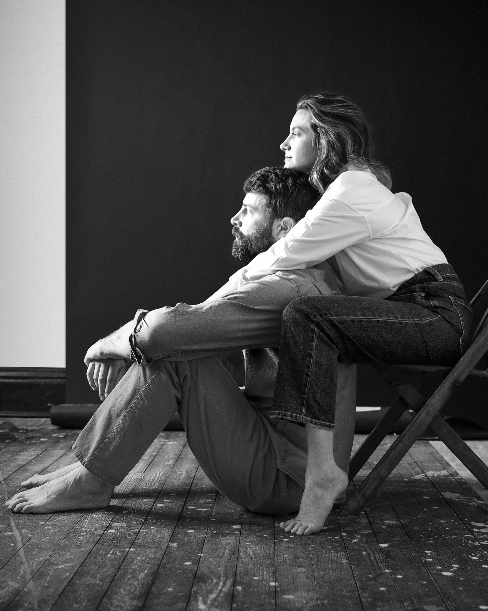
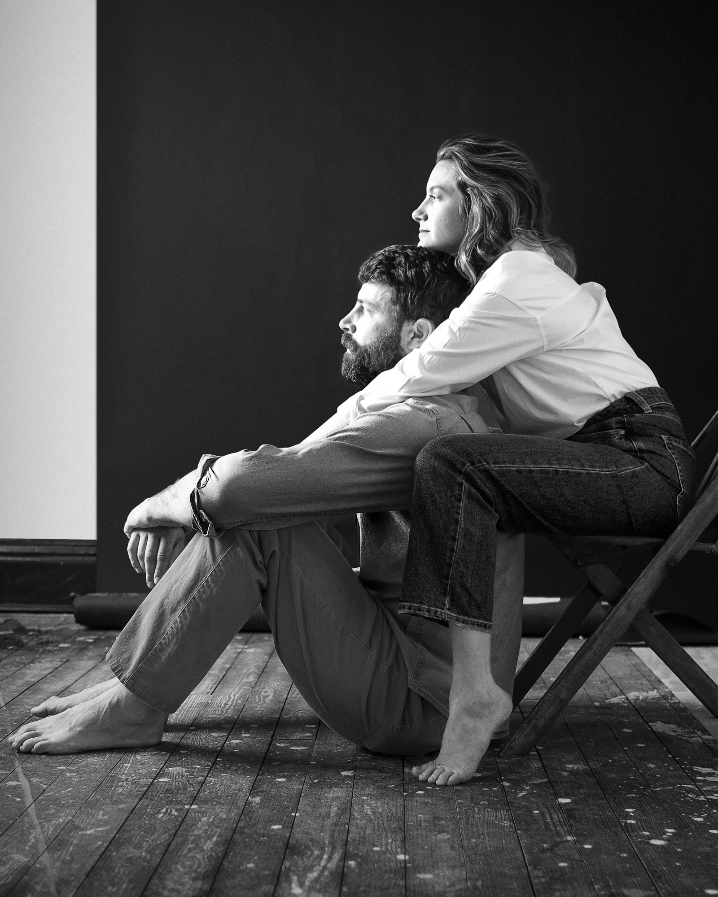

Film and Darkroom Enthusiast
But Also Digital Tech Geek
I started making photographs when I was a kid in the 1980s, and it was 1994 when I first became acquainted with that familiar smell of darkroom chemicals. Although I traded in my film camera for a digital one in 2005, I picked it back up around 2016 (yes, my return to film was certainly inspired by seeing the kid on Stranger Things illuminated by the red glow of the darkroom safelight). Today, I offer workshops in my town's local art space on how to shoot with film, develop the negatives, and make silver gelatin prints.
Beyond my personal projects, I provide editorial and commercial photography services to various publications, organizations, and businesses. For inquiries, please contact me via the contact form here on the site, or connect with my professional social media channels listed in the footer.